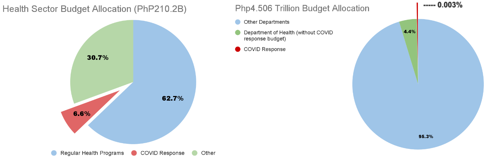

Along the streets of the DOH headquarters, the clanging of pots and pans, the raising of flags and signs with the words “Duque Out”, and the shouting on microphones for DOH to release their SRAs and benefits have transpired on National Heroes Day. Last August 30, 2021, Inquirer released a report on how healthcare workers and frontliners fled to the DOH office to launch a protest for their unpaid allowances.
Healthcare workers who risk their lives everyday to save countless people from this deadly virus, receive little to no pay according to the proposed DOH budget in 2020. ABS-CBN released that the COVID-19 pandemic is the most pressing and alarming issue as the country hits the 2 million mark in COVID cases, yet several healthcare workers are still demanding for their benefits. Is this situation really a problem of lack of time in distribution or straight on government neglect?
In December of 2020, the 4.506 Trillion Peso National budget was signed by President Rodrigo Duterte. According to the budget briefer released by the Department of Health (DOH), they received a total of 210.2 Billion Pesos, but out of this only 13 billion or 6.6% was allocated to COVID response. Comparing the 13 Billion to the 4.506 National budget, it is only 0.003% of the funds, not even reaching 1%, which is extremely low considering that this is a very pressing issue in the country. With the insufficient allotted budget to COVID Response, there have been lapses in dealing with the current issue at hand, which is seen through the health workers who are risking their lives to save others but are unable to receive their promised benefits.
You might be wondering, what exactly are these benefits health workers must be getting? Under the Bayanihan Act 2, included was that health workers employed by both government and private hospitals and who are exposed to the virus, are eligible to receive the Special Risk Allowance (SRA). Additional perks include meal accommodation and transportation allowances (MAT). To put it simply, if you are a health worker aiding Covid-19 patients, you are entitled to the SRA and MAT. Despite this order, there have been protests from nurses and other medical staff, asking the Department of Health to grant their benefits. This just shows that medical personnel have not been able to receive their allowances. The President has even released a statement in August of 2021 asking the health secretary, Francisco Duque III, saying “Secretary Duque, bayaran mo (pay [the medical front-liners]. Use whatever money there is. Bayaran mo ‘yung hinihingi ng mga nurses (Give what the nurses are asking for), both in government and those outside of government volunteers.”
Given this, it is seen that there are already signed provisions that state where certain government funds must go. It is only a matter of following the stated allocations. Those in charge of these billions of pesos seem to be neglecting these provisions, because if they weren’t, then health workers would not be on the streets demanding to be given their benefits. Instead they would be using their time to care for another COVID-19 patient.

Despite the big budget allocation towards the DOH, the COVID-19 budget is evidently inadequate and makes it seem unimportant despite the pandemic being the current biggest issue faced by the country. As seen in the graph, the allocation towards COVID-19 is merely 6.6% of the total Health Sector budget. To visualize this, 6.6% is like giving someone only 60 pesos for a full meal when you have 1000 pesos in your pocket. Additionally, the COVID-19 response budget is only 0.003% of the national budget. Imagine, 1% of anything is already small, can you imagine 0.003%? Though 13.83 billion pesos seems like a lot of money, using the graph as a visual representation, it can be seen that this budget is close to nothing compared to the other departments.
The budget allocation towards COVID-19 is not nearly enough. Based on the 210.2 billion peso DOH budget, only 13.83 billion pesos is allocated to the COVID-19 response. You would imagine that the COVID-19 response would be a priority considering it is what is halting the Philippine economy from progressing. But why are the other departments higher in priority? For instance, if we break down the COVID-19 budget, 2.5 billion pesos was allocated to COVID-19 vaccines. How does the government expect to give vaccines to 109.6 million Filipinos? According to the Philippine Department of Finance, 82.5 billion pesos is the amount required to provide vaccines to around 55 percent of the population. Since only 2.5 billion pesos is allocated, the DOH would need to find other outlets to fund the remaining 80 billion pesos. Besides this, they would require even more money to fund the rest of the population.
Several health care workers have come out to voice their concerns on this issue. In a report by ABS-CBN, the president of Alliance of Health Workers (AHW), Robert Mendoza, has expressed his disappointment with the DOH budget last September. He states that "It is sad that many of us have died, many of us became sick, and many have resigned or opted to retire early, yet we are still kneeling before the DOH to give us our benefits''. Additionally, the AHW association pointed out that the budget acts as a temporary band-aid solution and is not sustainable for health workers. In the same report, nurse Nico Oba claims that "the government promised it will give the benefits today but up to now, it has not. I pity us because we are the ones begging," said nurse Nico Oba. Apart from voicing out their concerns, medical front liners have also taken their complaints to the streets through protests. According to an article from Rappler, Dr. Jose Fabella Memorial Hospital, UST Hospital, and the Research Institute for Tropical Medicine are some of the medical establishments who rallied due to their overdue benefits. Aside from this, signs asking the present Health Secretary, Francisco Duque to resign were present, as he is in charge of releasing the SRAs and other allowances. In another interview, Robert Mendoza also voiced his dismay saying that the government should be caring for medical workers because many have already died, contracted the virus, or quit. These statements and rallies have greatly reflected on the health workers' urgent need for a higher budget COVID response and call to action towards the government.
With the funding of 13 billion pesos only for the COVID response, it is deemed insufficient as frontliners have shown their dissatisfaction with the given allocation through released statements and rallies. The budget plays an important role in being able to alleviate COVID related issues like, improve working and living conditions among health workers, and to provide enough pay to support their families especially during these difficult times. Therefore, the government should be taking into account the voices of the people and increasing the budget in order to better the situation at hand in the Philippines. Additionally, transparency within the transactions of this budget must be practiced and executed regularly. Hopefully, the country will be able to recover from this pandemic and to progress to a state of normalcy in due time.